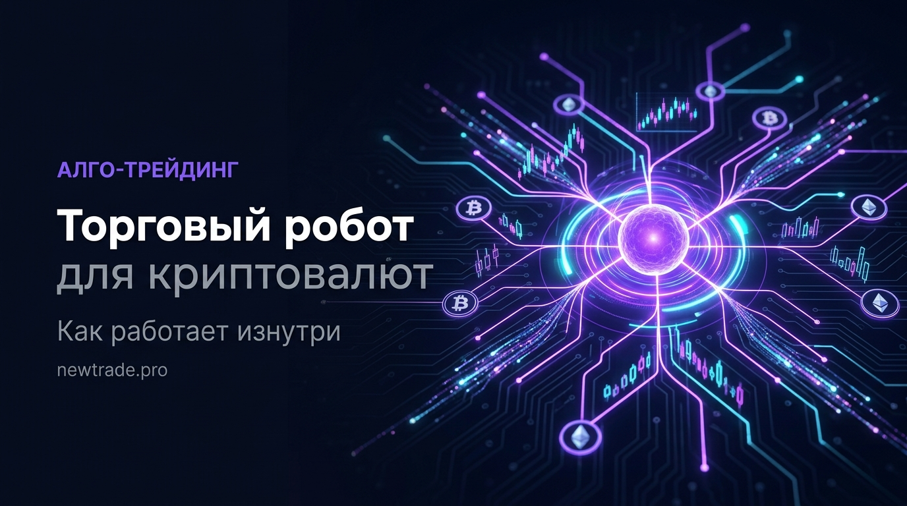

Торговый робот для криптовалют: как работает, сколько зарабатывает и кому подходит

Торговый робот — это словосочетание, которое одних пугает, других завораживает. Одни представляют сложный код, доступный только программистам. Другие ждут кнопку «включить и получать деньги». Реальность — где-то посередине.
В этой статье разберём, как устроен торговый алгоритм изнутри, какие виды роботов существуют, на что реально можно рассчитывать по доходности — и кому автоматическая торговля подходит, а кому лучше пока повременить.
Это программа, которая торгует вместо вас по заранее заданным правилам. Она не «думает» и не «чувствует рынок». Она делает ровно то, что в неё заложено — быстро, без устали и без эмоций. В этом её главное преимущество и главное ограничение одновременно.
Как работает торговый робот: механика изнутри
Любой торговый алгоритм — от простого DCA-бота до сложной многофакторной стратегии — работает по одному принципу: если условие А выполнено → выполни действие Б. Разница только в сложности этих условий.
Типичный цикл работы робота выглядит так:
| # | Этап | Что происходит |
|---|---|---|
| 1 | Сканирование рынка | Робот в реальном времени анализирует цену, объём и индикаторы на заданном активе и таймфрейме — 24 часа в сутки, 7 дней в неделю. |
| 2 | Сигнал стратегии | Когда условия стратегии выполнены, робот фиксирует сигнал на вход. |
| 3 | Проверка фильтров | Перед открытием позиции алгоритм проверяет дополнительные условия: время суток, волатильность, открытые позиции, лимит риска на счёте. |
| 4 | Исполнение ордера | Робот отправляет ордер на биржу через API за миллисекунды. Без промедлений, без эмоций, без «подожду ещё чуть-чуть». |
| 5 | Управление позицией | Автоматически отслеживает стоп-лосс и тейк-профит. При необходимости — трейлинг-стоп или частичное закрытие по заданным правилам. |
| 6 | Журналирование | Каждая сделка записывается: время, цена входа/выхода, PnL, причина закрытия. Это база для последующего анализа и улучшения стратегии. |
Ключевой момент — робот работает через API биржи. API (Application Programming Interface) — это защищённый канал связи между вашим аккаунтом на бирже и программой. Вы выдаёте роботу права на торговлю, но вывод средств остаётся только у вас.
При настройке API-ключа для робота всегда включайте опцию «Только торговля» и запрещайте вывод средств. Даже если ключ попадёт в чужие руки — украсть деньги не получится. Никогда не передавайте API-ключи третьим лицам.
Виды торговых роботов: что выбрать
Не все роботы одинаковы. Разные алгоритмы созданы для разных рыночных условий — и использовать трендового робота в боковике так же бессмысленно, как ехать на велосипеде по льду.
| Тип робота | Принцип работы | Лучшие условия | Основной риск |
|---|---|---|---|
| Трендовый | Следует за трендом, входит на пробоях и откатах | Трендовые рынки | Много ложных входов в боковике |
| Сеточный (Grid) | Расставляет ордера через равные интервалы цены | Боковые рынки | Убытки при сильном тренде против сетки |
| Арбитражный | Использует разницу цен между биржами или парами | Любые условия | Требует высокой скорости и крупного капитала |
| Мартингейл | Увеличивает объём после каждого убытка | Узкий боковик | Высокий риск слива депозита |
| DCA-бот | Усредняет позицию по заданному расписанию | Долгосрочный рост | Слаб при затяжном медвежьем тренде |
| Скальпер | Множество коротких сделок внутри дня | Высоколиквидные рынки | Чувствителен к комиссиям и проскальзыванию |
Большинство начинающих стартуют с DCA-бота или сеточного алгоритма — они проще в настройке и менее чувствительны к точности входа. Трендовые и скальперские стратегии требуют тонкой оптимизации и понимания рынка.
Сколько зарабатывает торговый робот: честные цифры
Это самый популярный вопрос — и самый сложный для честного ответа. Потому что доходность зависит от стратегии, капитала, рыночных условий и качества настройки. Никаких гарантий не существует — и любой, кто их даёт, лжёт.
Ориентировочные диапазоны доходности (реалистичные, не маркетинговые):
| Стратегия | Капитал | % в месяц | Доход/мес | Риск |
|---|---|---|---|---|
| Консервативная | $1 000 – $5 000 | 2–5% | $20–$250 | Низкий |
| Умеренная | $5 000 – $20 000 | 5–15% | $250–$3 000 | Средний |
| Агрессивная | $20 000+ | 15–40% | $3 000–$8 000+ | Высокий |
Цифры выше — это диапазоны, а не гарантии. Рынок непредсказуем. В медвежий период даже хорошо настроенный робот может работать в минус. Просадка 15–30% от пика — нормальная часть любой алгоритмической стратегии. Управление рисками важнее погони за максимальным процентом.
Реальные ожидания от торгового робота: стабильность и дисциплина, а не сверхдоходность. Хороший алгоритм зарабатывает там, где ручной трейдер теряет — на монотонных, повторяющихся рыночных паттернах, исполняя их без устали и без ошибок.
Почему не стоит верить обещаниям «500% в месяц»
На рынке полно предложений типа «наш бот делает +500% в месяц». Вот почему это невозможно:
- Сложный процент. 500% в месяц — это x6 к капиталу. За год депозит вырос бы в 6¹² = 2 176 782 296 раз. Ни один хедж-фонд в мире не показывает даже 1% от этого.
- Скриншоты легко подделать. Нарисовать красивую кривую доходности — дело 10 минут. Требуйте верифицированный трекинг на независимых платформах.
- Высокая доходность = высокий риск. Стратегия с 30%+ в месяц почти всегда содержит мартингейл или огромное плечо. Один неудачный месяц — и депозит обнулён.
Кому подходит торговый робот: честный разбор
Торговый робот — ваш инструмент, если:
- У вас есть рабочая торговая стратегия, которую вы хотите автоматизировать
- Вы хотите торговать 24/7 без постоянного мониторинга экрана
- Вы дисциплинированы и готовы следовать системе, а не переопределять робота вручную
- У вас есть стартовый капитал от $500–$1000 (ниже комиссии съедают прибыль)
- Вы понимаете риски и не ждёте «пассивного дохода без усилий»
Пока повремените с роботом, если:
- Вы не понимаете базовых принципов трейдинга — робот усилит ошибки, а не исправит их
- Вы ищете «волшебную кнопку» для пассивного дохода без участия
- У вас нет отдельного торгового капитала — торговать «последними деньгами» опасно
- Вы не готовы принять просадку — роботы временно уходят в минус, это нормально
- Вы хотите полностью отключиться — даже авторобот требует периодического контроля
5 реальных преимуществ алгоритмической торговли
- Нет эмоций. Страх, жадность, FOMO — главные враги трейдера. Робот не боится и не жадничает. Он просто исполняет правила.
- Скорость исполнения. Ордер отправляется за миллисекунды. В волатильный момент это может быть разница между хорошей ценой и проскальзыванием.
- Работа 24/7. Криптовалютный рынок не закрывается. Лучшие движения часто происходят ночью или в выходные — именно тогда, когда вы спите.
- Абсолютная дисциплина. Робот не пропустит сигнал, не передвинет стоп «ещё немного», не войдёт в позицию без подтверждения.
- Масштабируемость. Один алгоритм может одновременно торговать на 10–20 парах. Человек физически не способен отслеживать столько инструментов одновременно.
С чего начать: минимальный путь к первому роботу
Если вы решили попробовать алгоритмическую торговлю, вот реалистичный маршрут:
- Выберите биржу с API. Bybit, Binance, OKX — все поддерживают API-торговлю. Для российских пользователей Bybit сейчас наиболее доступен.
- Определите стратегию. Не запускайте робота «просто посмотреть». Должны быть чёткие правила: когда входить, когда выходить, какой риск на сделку.
- Протестируйте на истории (бэктест). Прежде чем рисковать реальными деньгами, прогоните стратегию на исторических данных. Смотрите не только на доходность, но и на максимальную просадку.
- Запустите на минимальном капитале. Первые 1–2 месяца — с небольшой суммой. Убедитесь, что робот ведёт себя так, как ожидалось.
- Масштабируйте постепенно. Только после подтверждённой стабильности на реальном рынке — увеличивайте капитал.
Вывод
Торговый робот — это инструмент дисциплины, а не источник лёгких денег. Он не заменяет понимание рынка — но многократно усиливает того, кто этим пониманием обладает.
Если у вас есть стратегия, которая работает вручную — значит, у вас есть основа для автоматизации. Следующий шаг: доверить исполнение этой стратегии алгоритму, который не устаёт, не ошибается и не поддаётся эмоциям.
Именно это и делает торговый робот newtrade.pro: берёт проверенную стратегию и исполняет её на Bybit в автоматическом режиме — круглосуточно, с заданными параметрами риска и полным контролем с вашей стороны.
Готовый торговый робот для Bybit
На newtrade.pro — торговый алгоритм с проверенной стратегией, настройкой под ваш капитал и поддержкой. Запустить автоматическую торговлю можно за один день.
Узнать подробнее на newtrade.pro →